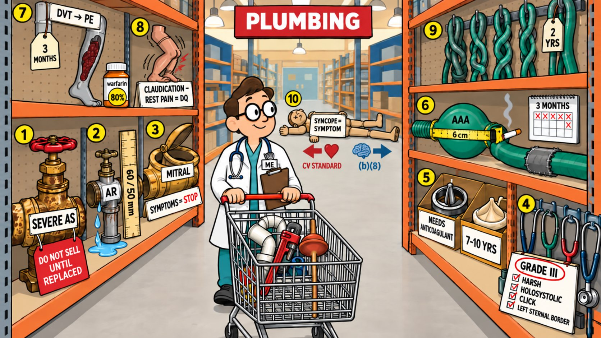

Card 6 of 13 · 49 CFR 391.41(b)(4)
The Plumbing Aisle
Valves and vessels — aortic and mitral disease, murmurs, prosthetic valves, aneurysm, pulmonary embolism, PVD, venous disease, syncope.

0:00 / 0:00
Press play — the narrator walks the scene and the spotlight follows to each numbered object. Click any paragraph to jump there. Space play/pause · ←/→ previous/next object · [/] previous/next card.
What this card covers
Valves and vessels — aortic and mitral disease, murmurs, prosthetic valves, aneurysm, pulmonary embolism, PVD, venous disease, syncope. Standard: 49 CFR 391.41(b)(4).
The hooks to keep
- Severe AS doesn't sell
- AR is 60 over 50 mm
- Grade III is pathologic
- AAA is about size and cigarettes
- PE waits three months; rest pain disqualifies
- Syncope goes wherever its cause points
Test yourself
9 questions on this card
Answer each question to see the explanation, its sources, and the cheat-sheet entry.